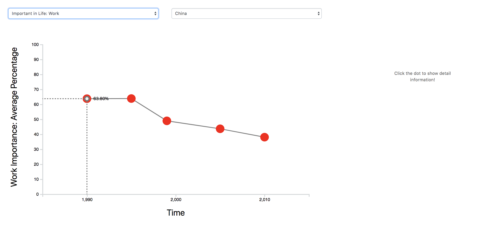
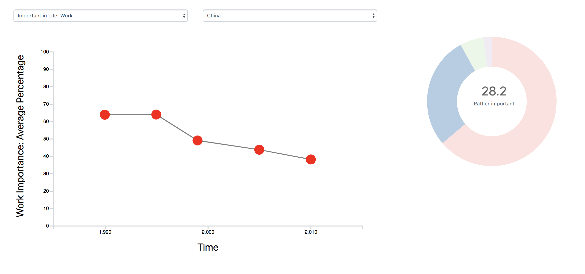

Discovery Process
The project gathered the data from World Values Survey and visualized it
with line chart
to show the trendency of people's vaule changing based on different countries. The donut chart displays
the detail information about the specific percentage of how people think the variable (i.e the work, friends)
is very important, rather important etc.
# Choose the variable and country you interest in
 # Hover the dot to show the percentage data
# Hover the dot to show the percentage data

# Click the dot to show the donut chart of detail infomation
 # Hover the donut chart to know
how much percentage of people think the variable is very important / rather important / not at all important/
don't know / no answer
# Hover the donut chart to know
how much percentage of people think the variable is very important / rather important / not at all important/
don't know / no answer
